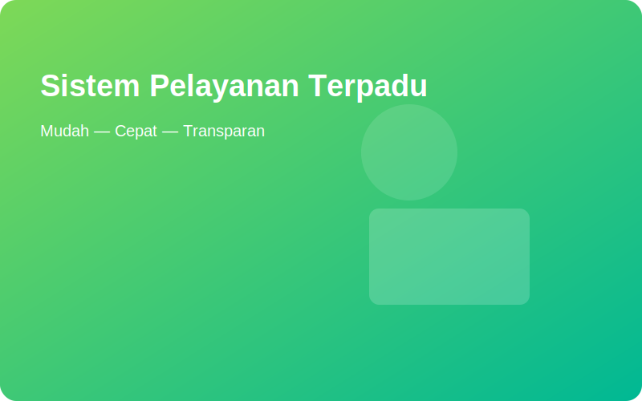

Sistem Pelayanan Terpadu
Melayani warga kota dengan cepat, mudah, dan transparan — semua dalam satu platform.
—
Pengguna Terdaftar
—
Pengajuan Diproses
—
Layanan Selesai
Pengumuman Terbaru

Profil
Kami memberikan layanan publik digital untuk memudahkan warga mengurus administrasi, perizinan, dan pengaduan.
Layanan Kami
Cek Status
Masukkan nomor tiket untuk melihat status pengajuan Anda.
Pengaduan
Kirim pengaduan atau aspirasi masyarakat yang akan ditindaklanjuti oleh petugas.
Kontak
Alamat kantor pelayanan | Telepon: (0341) 000000 | Email: layanan@kota.go.id